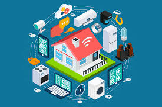

Internet of Things use

- Healthcare
- As patients can be monitored remotely and their cases recorded in electronic records,
it can also be activated in wearable devices to impose control on exercise and sleep style of patients and also can contribute to saving many lives when reporting a pre-existing risk to the patient's health before death occurs .
- Buying and selling
- Both the consumer and the merchant benefit as the merchant monitors the goods available to him in the store and sales and purchases, while the consumer is provided with the last of the goods provided
- Factories and companies
- This is represented by the polarization of data on machines in the factory divisions, materials and equipment accumulated on the shelves in warehouses, and the role of the Internet of Things here is to track the available resources in terms of their accessibility and problems there and others; This entails ensuring that the business is performed efficiently and effectively.